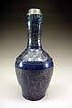
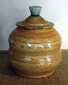
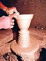
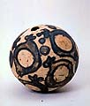
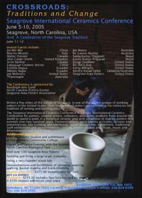

| Crossroads
Traditions and Change - Seagrove International
Ceramics Conference
The Seagrove International Ceramics Conference Crossroads
will be held in Seagrove, North Carolina, USA from June 5-10, 2005
and A Celebration of the Seagrove Tradition from June 11-12,
2005.
Invited Guests include:
- Jin Win Wei (China)
- Marino Moretti (Italy)
- Walter Ostrom (Canada)
- Alan Caiger-Smith (United Kingdom)
- Scott Barnim (Canada)
- Longquan Ceramic Artists (China)
- Esthela Dagua (Ecuador)
- Miriam Vagas (Ecuador)
- Joe Molinaro (United States)
- Thancoupie (Australia)
- Joe Bosco (Australia)
- Dr. Louise Hamby (Australia)
- Santa Kumar Prajapati (Nepal)
- Laxmi Kumar Prajapati (Nepal)
- Doug Casebeer (United States)
- Dr. Terry Zug (United States)
- Gerry Williams (United States)
- Neville Assad-Salha (Lebanon/Australia)
- Seagrove Area Potters (United States)
|  |
 |
 |
 |
| Scott Barnim |
Doug Casebeer |
Prajapati Potters |
Thancoupie |
The Conference is sponsored by:
- Randolph Arts Guild
- North Carolina Pottery Center
- Seagrove Area Potters Association
Within a few miles of the village of Seagrove, is one of the largest
groups of working potters in the United States. Over one hundred
potters are continuing the centuries old tradition of turning and
burning pots.
The Seagrove International Ceramics Conference is a major International
Ceramics Conference for potters, ceramic artists, collectors, educators,
students from around the world to spend a week in a historical ceramic
area with a tradition of making pottery that extends over two hundred
years. Demonstrations, participatory activities, lectures and presentations,
kiln building and kiln firings, panel discussions, exhibitions,
traditional craft exhibitions and demonstrations, visiting pottery
studios and shops, music and entertainment and much more.
Additional
Activities:
- Visit the Pottery Studios and exhibitions
at Montgomery Community College
- Dinner and Dance-Evening with the Animals,
North Carolina Zoological Park
- Visit over 100 Seagrove Area Potters
- Building and firing a large-scale sculpture
- Firing a two chamber wood kiln
- Demonstrations and exhibitions of spinning, Weaving,
quilting, basket making and blacksmithing
Conference cost: $375.00 Includes four lunches and six dinners
Students: $275.00 Includes four lunches and six dinners
A $100 deposit will insure your place
For Additional information Please Contact: Randolph Arts Guild
P.O. Box 1033 Asheboro, NC 27204-1033 • e-mail: arts@asheboro.com
• office: (+1) 336 629-0399 fax: (+1) 336 629-2892
Related Article: Ceramic Toxic Materials
More Articles
|
{kind=link}
{kind=link}
{kind=link}
{kind=link}